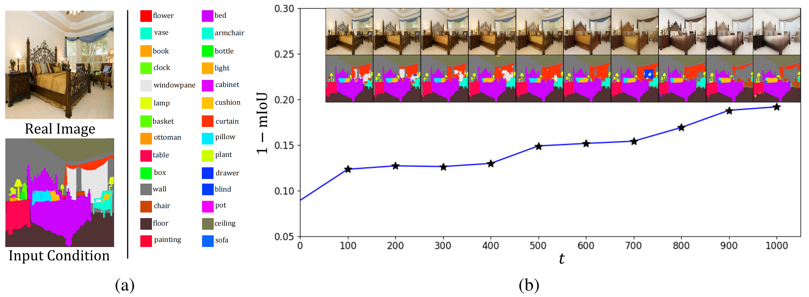
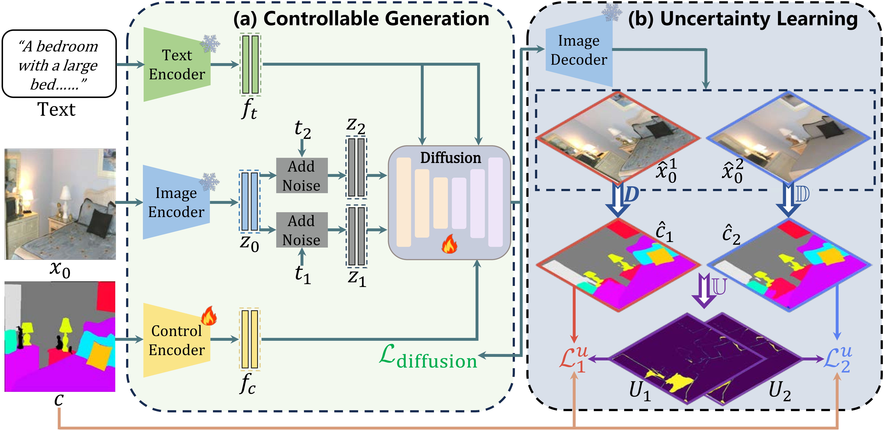
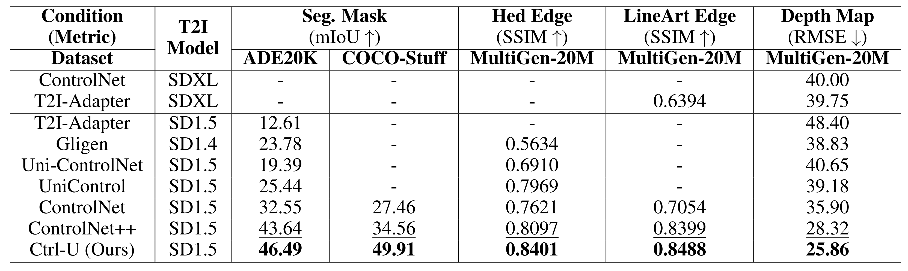
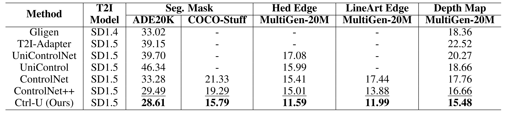

Motivation
Given a test image and the layout condition, we employ a diffusion model to generate new images by adding noise and then recovering from the noisy input. (a) Ground-truth segmentation results with the category illustration. (b) Here we show the reward changes, \(\textit{i.e.}\), mIoU error, on newly generated images at different timesteps. The horizontal axis represents the current timestep \(t\) and the vertical axis shows the error, \( \textit{i.e.} \), 1-mIoU. As shown, even at \(t = 0\), there are non-zero mIoU errors. As \(t\) increases, although the visual layout aligns with the condition, the reward model tends to increase the error, leading to the backpropagation of incorrect gradients.
Abstract
In this paper, we focus on the task of conditional image generation, where an image is synthesized according to user instructions. The critical challenge underpinning this task is ensuring both the fidelity of the generated images and their semantic alignment with the provided conditions. To tackle this issue, previous studies have employed supervised perceptual losses derived from pre-trained models, \( \textit{i.e.} \), reward models, to enforce alignment between the condition and the generated result. However, we observe one inherent shortcoming: considering the diversity of synthesized images, the reward model usually provides inaccurate feedback when encountering newly generated data, which can undermine the training process. To address this limitation, we propose an uncertainty-aware reward modeling, called Ctrl-U, including uncertainty estimation and uncertainty-aware regularization, designed to reduce the adverse effects of imprecise feedback from the reward model. Given the inherent cognitive uncertainty within reward models, even images generated under identical conditions often result in a relatively large discrepancy in reward loss. Inspired by the observation, we explicitly leverage such prediction variance as an uncertainty indicator. Based on the uncertainty estimation, we regularize the model training by adaptively rectifying the reward. In particular, rewards with lower uncertainty receive higher loss weights, while those with higher uncertainty are given reduced weights to allow for larger variability. The proposed uncertainty regularization facilitates reward fine-tuning through consistency construction. Extensive experiments validate the effectiveness of our methodology in improving the controllability and generation quality, as well as its scalability across diverse conditional scenarios, including segmentation mask, edge, and depth conditions.
Method
Overall pipeline for our proposed method. (a) Conditional Generation. Given text, source image \(x_0\), and the conditional control \(c\), we extract feature \(z_0\), \(f_t\), \(f_c\), respectively. Then, we fine-tune the Diffusion model to generate two intermediate features for the image decoder. (b) Uncertainty Learning. Given the two features, we decode the two images, \( \textit{i.e.} \), \(\hat{x}_0^1\) and \(\hat{x}_0^2\). Then we apply the reward model to obtain the two layout predictions \(\hat{c}_1\) and \(\hat{c}_2\). We leverage the prediction discrepancy as the uncertainty indicator to rectify the original reward loss.
Qualitative Results
Better Controllability and Generation Quality than Other Methods

Qualitative comparisons with different conditional controls on unseen test images.
Quantitative Results
Better Controllability than Other Methods
Controllability comparison under various conditional controls and datasets. \(\uparrow\) denotes higher result is better, while \(\downarrow\) indicates lower is better. '-' signifies the absence of a publicly available model for testing. The best result in each column is marked bold and the second is underlined. We generate four groups of png images and report their average result to reduce random errors.
Better Generation Quality than Other Methods
FID (\(\downarrow\)) comparison under various conditional controls and datasets. '-' signifies the absence of a publicly available model for testing. The best result in each column is marked bold and the second is underlined. We generate four groups of png images and report their average result to reduce random errors.
More Visualization Results (GIF Demo)

LineArt Edge

Depth Map
Hed Edge

Segmentation Map
BibTeX
If you find our work useful in your research, please consider citing:@article{gao2024scp,
title={SCP-Diff: Photo-Realistic Semantic Image Synthesis with Spatial-Categorical Joint Prior},
author={Gao, Huan-ang and Gao, Mingju and Li, Jiaju and Li, Wenyi and Zhi, Rong and Tang, Hao and Zhao, Hao},
journal={arXiv preprint arXiv:2403.09638},
year={2024}
}